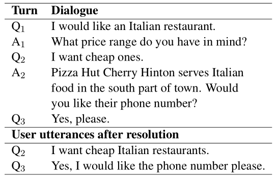
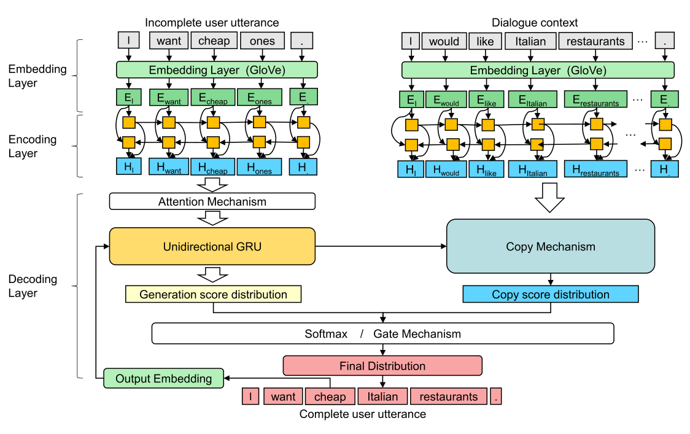
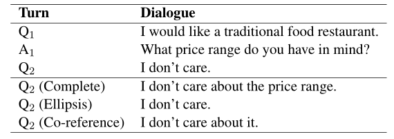

Abstract
Ellipsis and co-reference are common and ubiquitous especially in multi-turn dialogues. In this paper, we treat the resolution of ellipsis and co-reference in dialogue as a problem of generating omitted or referred expressions from the dialogue context. We therefore propose a unified end-to-end Generative Ellipsis and CO-reference Resolution model (GECOR) in the context of dialogue. The model can generate a new pragmatically complete user utterance by alternating the generation and copy mode for each user utterance. A multi-task learning framework is further proposed to integrate the GECOR into an end-to-end task-oriented dialogue. In order to train both the GECOR and the multi-task learning framework, we manually construct a new dataset on the basis of the public dataset CamRest676 with both ellipsis and co-reference annotation. On this dataset, intrinsic evaluations on the resolution of ellipsis and co-reference show that the GECOR model significantly outperforms the sequence-to-sequence (seq2seq) baseline model in terms of EM, BLEU and F1 while extrinsic evaluations on the downstream dialogue task demonstrate that our multi-task learning framework with GECOR achieves a higher success rate of task completion than TSCP, a state-of-the-art end-to-end task-oriented dialogue model.
GECOR Paper (Quan et al. EMNLP '19)
Examples of ellipsis and co-reference resolution

Getting Started
The new dataset and the code of our models are available:
License

This work is licensed under a Creative Commons Attribution-NonCommercial 4.0 International License
Have Questions?
For any issue, email to dyxiong@suda.edu.cn.
The GECOR Model

Task-Oriented Dialogue with GECOR

An example of the ellipsis / co-reference annotation

The CamRest676 dataset contains 676 dialogues, with 2,744 user utterances. After annotation, 1,174 ellipsis versions and 1,209 co-reference versions are created from the 2,744 user utterances. 1,331 incomplete utterances are created that they are an either ellipsis or co-reference version. 1,413 of the 2,744 user utterances are complete and not amenable to change. No new versions are created from these 1,413 utterances.
Citations
If you use the source codes or datasets included here in your work, please cite our paper. The bibtex is listed below:
@inproceedings{quan2019GECOR,
title={GECOR: An End-to-End Generative Ellipsis and Co-reference Resolution Model for Task-Oriented Dialogue},
author={Jun Quan, Deyi Xiong, Bonnie Webber and Changjian Hu},
booktitle={Conference on Empirical Methods in Natural Language Processing and 9th International Joint Conference on Natural Language Processing},
year={2019}}